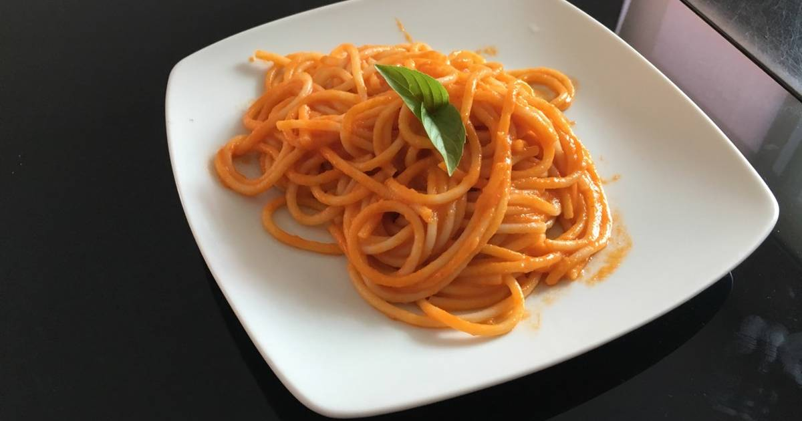

Recipe for bolognese spaghetti

Description
The recipe for spaghetti is very simple. The longest part is the bolognese sauce which i'ts all about the tomatoes, followed by the meat and finally the pasta itself.
Ingredients
- 1/2 kilo of red tomato
- 400g of Red Tomato puree
- 1/2 big white onion
- 2 pieces of garlic
- 1/2 tsp oregano
- 2 tbsp butter
- 2 tbsp olive oil
- 400g ground beef
- 1/2 of a bread's crumb
- 1 pinch of salt
- 1/2 big white onion
- 2 pieces of garlic
- Spaghetti pasta
Steps (ya los voy a poner en español) (nomas pa la salsa)
- Hervir los jitomates 4 minutos lumbre media alta hasta que se les reviente la cascara. Dejar enfriar.
- Picar el ajo y la cebolla muy finos
- Pelar los jitomates y picarlos finos
- En la estufa, derretir la mantequilla en una olla y echarle el aceite de oliva
- Agregar la cebolla picada al aceite 4 minutos a fuego medio alto
- Agregar el ajo y el oregano y moverlo menos de un minuto
- Añadir el jitomate picado
- Dos minutos despues incorporar el pure de jitomate y la sal, revolver
- (Opcional) Añadir 3 o 4 hojas de albahaca
- Una vez que hierva bajar el fuego y dejar que se cocine una media hora